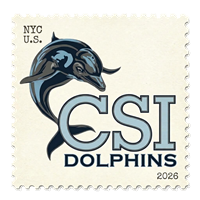

Dear Friend,
Greetings from New York! Hope you are having a wonderful summer. Sending you warm wishes and lots of sunshine from across the ocean!

NEW YORK, NY
SUMMER 2026
SUMMER 2026

To: Friend
New York · Summer 2026
Dear Friend,
Greetings from New York! Hope you are having a wonderful summer. Sending you warm wishes and lots of sunshine from across the ocean!